Main menu
1 capture

Top-level menu (8 entries)
main-menu · main/00-main-menu.png
Test patterns
2 captures

Test Patterns sub-menu
patterns-menu · patterns/00-patterns-menu.png

Pluge (first pattern)
patterns-pluge · patterns/01-patterns-pluge.png
Color Bars
1 capture
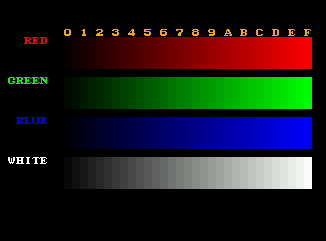
Color Bars
color-bars · color-bars/00-color-bars.png
EBU Color Bars
1 capture
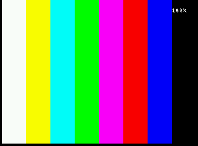
EBU Color Bars
ebu-bars · ebu-bars/00-ebu-bars.png
SMPTE Color Bars
1 capture
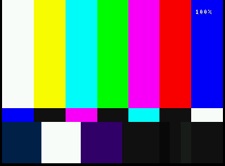
SMPTE Color Bars
smpte-bars · smpte-bars/00-smpte-bars.png
Referenced Color Bars
1 capture
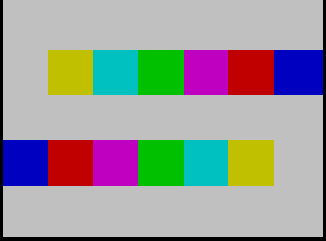
Referenced Color Bars (601)
ref-bars · ref-bars/00-ref-bars.png
Color Bleed Check
1 capture
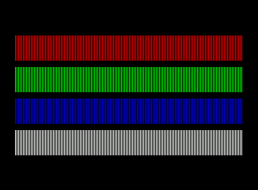
Color Bleed Check
color-bleed · color-bleed/00-color-bleed.png
Monoscope
1 capture
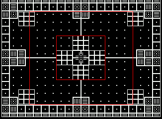
Monoscope
monoscope · monoscope/00-monoscope.png
Grid
1 capture
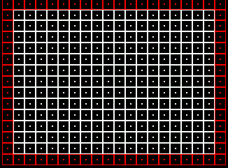
Grid
grid · grid/00-grid.png
Gray Ramp
1 capture
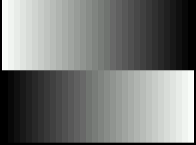
Gray Ramp
gray-ramp · gray-ramp/00-gray-ramp.png
White & RGB Screens
1 capture
100 IRE
1 capture
Overscan
1 capture
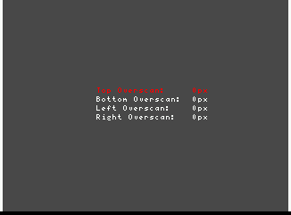
Overscan
overscan · overscan/00-overscan.png
Convergence
1 capture
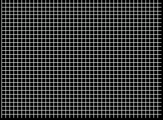
Convergence
convergence · convergence/00-convergence.png
Color Bars w/ Gray
1 capture
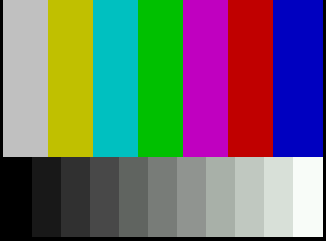
Color Bars w/ Gray (procedural)
bars-gray · bars-gray/00-bars-gray.png
Linearity
1 capture
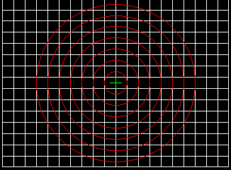
Linearity (circle + crosshatch)
linearity · linearity/00-linearity.png
Phase
1 capture
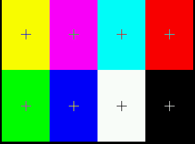
Phase / color-burst check
phase · phase/00-phase.png
Brightness
1 capture
Contrast
1 capture
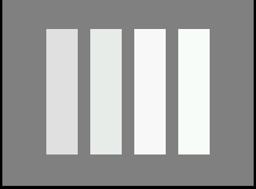
Contrast ramp
contrast · contrast/00-contrast.png
Video tests
1 capture

Video Tests sub-menu
video-menu · video/00-video-menu.png
Drop Shadow Test
1 capture
Striped Sprite Test
1 capture
Horiz/Vert Stripes
1 capture
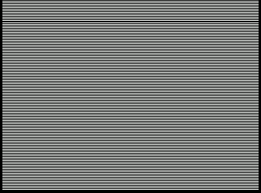
Horiz/Vert Stripes
stripes · stripes/00-stripes.png
Checkerboard
1 capture
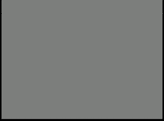
Checkerboard
checkerboard · checkerboard/00-checkerboard.png
Backlight Zone Test
1 capture
Audio tests
1 capture

Audio Tests sub-menu
audio-menu · audio/00-audio-menu.png
Hardware tools
1 capture

Hardware Tools sub-menu
hardware-menu · hardware/00-hardware-menu.png
EEPROM test
1 capture

EEPROM Test grid (64 words, hex)
eeprom-grid · eeprom/00-eeprom-grid.png
Jaguar CD Probe
2 captures
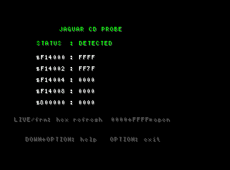
Jaguar CD Probe register view
cd-probe · cd-probe/00-cd-probe.png
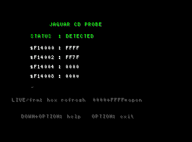
Memory Track Test (from CD Probe)
memory-track · cd-probe/01-memory-track.png
Sprite stress test
1 capture
Sprite Stress Test default (1 sprite, 8x8, single-line)
sprite-stress-default · sprite-stress/00-sprite-stress-default.png
JagLink test
1 capture

JagLink Test (Jerry UART probe)
jaglink-probe · jaglink/00-jaglink-probe.png
Y/C delay pattern
1 capture

Y/C Delay (RGB+CMY strips with 1px white dividers)
ycdelay-strips · ycdelay/00-ycdelay-strips.png
Diagonal / clock pattern
1 capture

Diagonal / Clock pattern (8 px spacing, default invert off)
diagonal-default · diagonal/00-diagonal-default.png
Vertical scroll test
1 capture

Vertical Scroll Test (default speed 1, dir DN)
vertscroll-running · vertscroll/00-vertscroll-running.png
White noise test
1 capture

White Noise Test (idle, ready to play)
white-noise-idle · white-noise/00-white-noise-idle.png
Pink noise test
1 capture

Pink Noise Test (idle, ready to play) — all-black: bad headless libretro read-FB, not the cart
pink-noise-idle · pink-noise/00-pink-noise-idle.png
L/R channel separation
1 capture

Channel Separation (BOTH in-phase, OFF)
channel-sep-default · channel-sep/00-channel-sep-default.png
System Info
1 capture
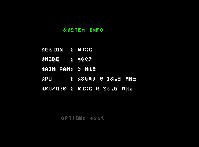
System Info (hardware detection summary)
system-info · system-info/00-system-info.png
Video Mode Test
1 capture
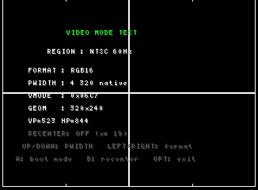
Video Mode Test (resolution switching)
video-mode · video-mode/00-video-mode.png
Screen savers
1 capture

Screen Savers sub-menu
screensavers-menu · screensavers/00-screensavers-menu.png
Color Cycle saver
1 capture
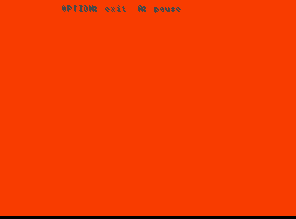
Color Cycle screen saver (single frame)
color-cycle · color-cycle/00-color-cycle.png
Bouncing Square saver
1 capture
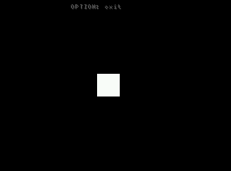
Bouncing Square screen saver (single frame)
bouncing-square · bouncing-square/00-bouncing-square.png
Scrolling Bars saver
1 capture
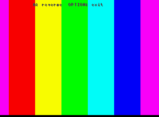
Scrolling Bars screen saver (single frame)
scrolling-bars · scrolling-bars/00-scrolling-bars.png
Help
1 capture

Help screen
help-menu · help/00-help-menu.png
Options
1 capture

Options screen
options-menu · options/00-options-menu.png
Credits
1 capture

Credits
credits-screen · credits/00-credits-screen.png